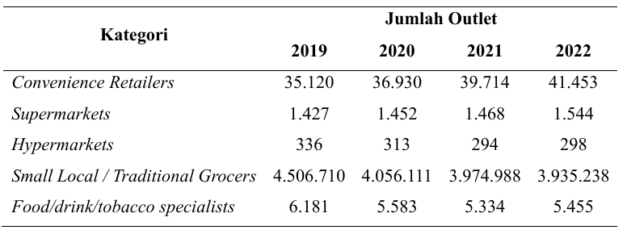
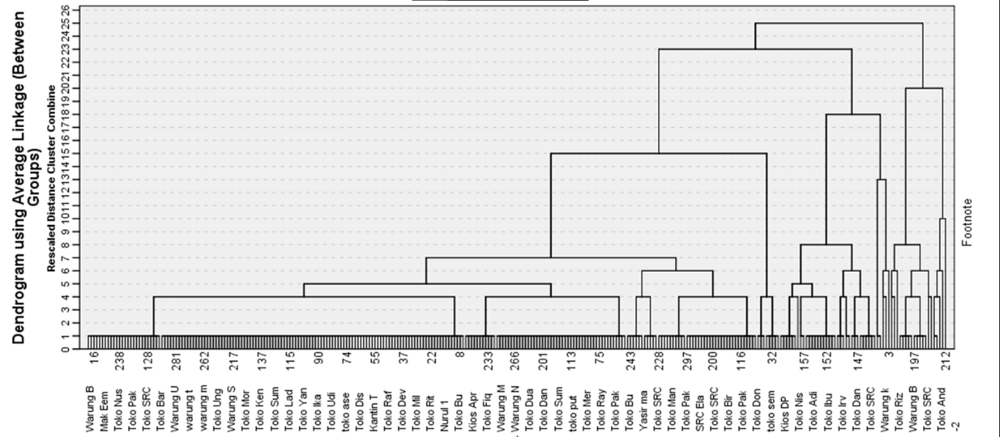
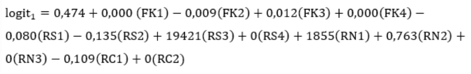

<div id="portfolio-page" class="portfolio-page-content">
    <div class="portfolio-page-wrapper">
        <div class="portfolio-page-nav">
            <div class="nav-item portfolio-page-prev-next">
                <a class="ajax-page-load" href="portfolio-project-mcdm.html"><i class="lnr lnr-chevron-left"></i></a>
                <a class="ajax-page-load" href="portfolio-project-modul-logpem.html"><i class="lnr lnr-chevron-right"></i></a>
            </div>
            <div class="nav-item portfolio-page-close-button">
                <a id="portfolio-page-close-button" href="#"><i class="lnr lnr-cross"></i></a>
            </div>
        </div>

        <div class="portfolio-page-title">
            <h1>Analisis <i>clustering</i> dan pemodelan matematis pada toko ritel tradisional</h1>
        </div>

        <div class="row">
            <div class="col-sm-8 col-md-8 portfolio-block">

                <div>
                    <p class="deskripsi-tambahan">
                       Analisis terhadap toko ritel tradisional ini berangkat dari keresahan saya atas <b>penurunan jumlah toko ritel tradisional</b> yang terus terjadi dalam beberapa tahun terakhir. Padahal, toko ritel tradisional merupakan salah satu <b>penggerak utama perekonomian, khususnya di sektor UMKM.</b> Oleh karena itu, saya tertarik untuk <b>memodelkan kondisi nyata yang sedang dihadapi oleh toko ritel tradisional</b> ke dalam bentuk model matematis. Tujuannya adalah untuk memberikan rekomendasi strategi adaptasi yang dapat diterapkan oleh toko ritel tradisional agar mampu bertahan dan berkembang di tengah perubahan pasar dan disrupsi.
                        <div class="owl-carousel portfolio-page-carousel">
                            <div class="item">
                                
                            </div>
                        </div>
                    </p>

                    <p class="deskripsi-tambahan">
                       Berikut merupakan indikator atau parameter yang berpengaruh kepada toko ritel tradisional:
                       <ul>
                        <li>Jumlah mitra kerja sama</li>
                        <li>Jumlah promosi yang dilakukan</li>
                        <li>Jumlah saluran penjualan</li>
                        <li>Daya beli Masyarakat</li>
                        <li>Jumlah kompetitpr</li>
                        <li>Usia toko ritel</li>
                        <li>Bantuan pemerintah</li>
                       </ul>
                    </p>

                    <p class="deskripsi-tambahan">
                       Pengumpulan data dilakukan melalui wawancara dengan pemilik toko ritel yang tersebar di <b>seluruh Pulau Jawa</b>, dengan total target responden sebanyak 303 orang. Data yang telah terkumpul kemudian diolah menggunakan <b>analisis cluster</b> yang bertujuan untuk <b>mengelompokkan toko ritel</b> berdasarkan kemampuan adaptasinya, apakah termasuk kategori <b>toko ritel yang mampu beradaptasi</b> dengan baik atau kurang<b> mampu beradaptasi terhadap perubahan.</b>
                    </p>

                    <div class="owl-carousel portfolio-page-carousel">
                        <div class="item">
                            
                        </div>
                    </div>

                    <p class="deskripsi-tambahan">
                       Setelah dilakukan <b>analisis <i>cluster</i></b>, langkah selanjutnya adalah membangun model matematis menggunakan <b><i>Logistic Regression</i></b>. Model ini bertujuan untuk memprediksi variabel dependen kategorik dengan lebih dari dua kategori berdasarkan sejumlah variabel independen. Pada akhirnya, model ini dikembangkan untuk menghasilkan prediksi apakah suatu toko ritel mampu beradaptasi dengan baik atau tidak terhadap perubahan yang terjadi. berikut merupakan hasil model matematis.
                    </p>

                    <div class="owl-carousel portfolio-page-carousel">
                        <div class="item">
                            
                        </div>
                    </div>
                </div>

                <script type="text/javascript">
                    jQuery(document).ready(function($){
                        $('.portfolio-page-carousel').imagesLoaded(function(){
                            $('.portfolio-page-carousel').owlCarousel({
                                smartSpeed:1200,
                                items: 1,
                                loop: true,
                                dots: true,
                                nav: true,
                                navText: false,
                                margin: 10,
                                autoHeight:true
                            });
                        });
                    });
                </script>
            </div>

            <div class="col-sm-4 col-md-4 portfolio-block">
                <!-- Project Description -->
                <div class="project-description">
                    <div class="block-title">
                        <h3>Description</h3>
                    </div>
                    <ul class="project-general-info">
                        <li><p><i class="lnr lnr-user"></i> Nurlintang Asriono Sudarmawan</p></li>
                        <li><p><i class="lnr lnr-link"></i> <a href="#" target="_blank"></a></p></li>
                        <li><p><i class="lnr lnr-calendar-full"></i> 28 May, 2025</p></li>
                    </ul>

                    <p class="text-justify">Analisis model bisnis toko ritel tradisional ketika mengalami disrupsi serta strategi adaptasi yang dapat dilakukan dengan mengembangkan model matematis.</p>
                    <!-- /Project Description -->

                    <!-- Technology -->
                    <div class="tags-block">
                        <div class="block-title">
                            <h3>Technology</h3>
                        </div>
                        <ul class="tags">
                            <li><a>Word</a></li>
                            <li><a>Excel</a></li>
                            <li><a>Power Point</a></li>
                            <li><a>RapidMiner</a></li>
                            <li><a>SPSS</a></li>
                        </ul>
                    </div>
                    <!-- /Technology -->

                    <!-- Skill -->
                    <div class="tags-block">
                        <div class="block-title">
                            <h3>Skill</h3>
                        </div>
                        <ul class="tags">
                            <li><a>Analytical Thinking</a></li>
                            <li><a>Problem Solving</a></li>
                            <li><a>Attention to Detail</a></li>
                            <li><a>Statistics</a></li>
                        </ul>
                    </div>
                    <!-- /skill -->
                </div>
                <!-- Project Description -->
            </div>
        </div>
    </div>
</div>
